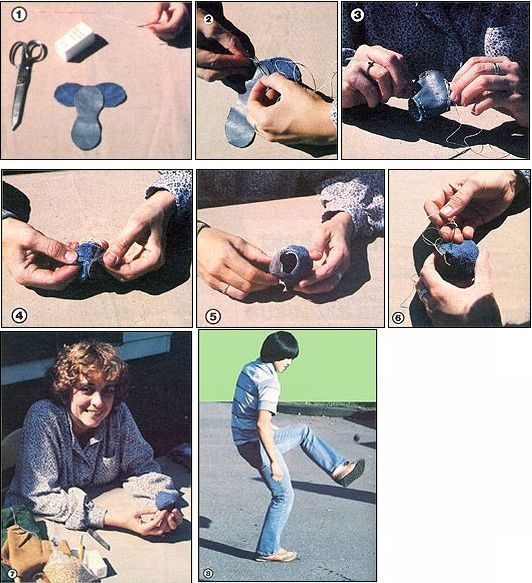

[1] Arrange the two pieces as shown, right sides together. [2] Begin stitching with dental floss or carpet thread. [3] Sew until you're about 1-1/2 inches from your starting point. [4] Then turn the pouch right side out . . . [5] fill it with mung beans or popcorn . . . [6] close up the seam . . . [7] and you have a footbag! [8] A successful inside kick keeps the little sack in play.